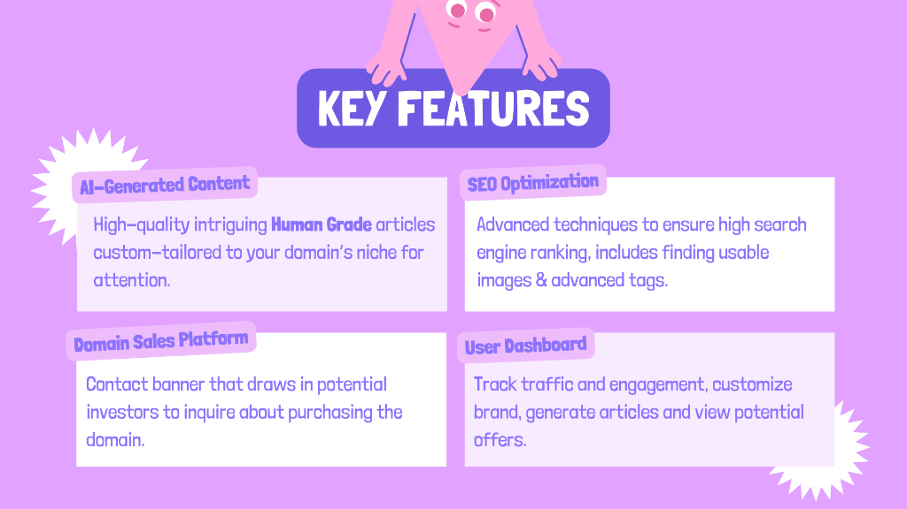
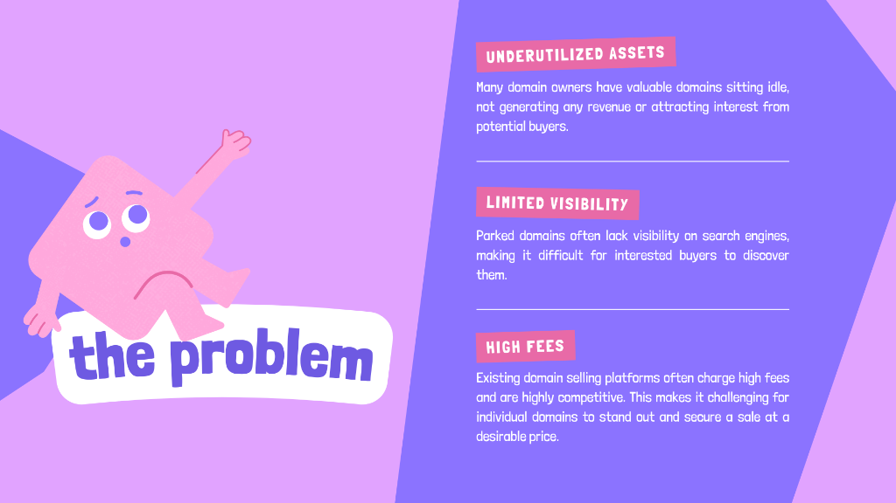

A specialized platform for domain investors to turn idle assets into search-ready, high-value domains.

Most domain owners have valuable "parked" domains just sitting idle. They don't generate traffic, they aren't indexed by search engines, and they don't attract buyers. Listing a domain on a marketplace isn't enough anymore—you need to prove it has potential.

Valia bridges the gap between "Parked" and "Productive." By generating high-quality **Human Grade** AI articles custom-tailored to a domain's specific niche, Valia allows owners to quickly dominate SEO keywords without triggering spam flags. This ages the domain and builds a track record of traffic that validates the asset for future buyers.
Valia simplifies the complex process of "domain aging" into a 4-step workflow: Point the domain, describe the niche, generate the brand/content, and share. It's built for speed, helping domain investors sell assets faster and at higher multiples.